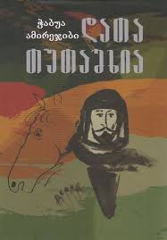

საყვარელი წიგნი:
„დათა თუთაშხია“
„დათა თუთაშხია“ ჭაბუა ამირეჯიბის რომანია
დაწერილი 1962-1972 წლებში და თარგმნილია ინგლისურად 1985 წელს.
რომანი დაყოფილია ოთხ ნაწილად, რომელიც ასახავს დათა თუთაშხიას ცხოვრებასა და ზნეობრივ მოგზაურობას.
დათა იწყებს ცხოვრებას, როგორც გაქცეული მას შემდეგ,
რაც უსამართლოდ გაასამართლეს შემთხვევით მკვლელობაში.
ის ცდილობს დაეხმაროს მათ, ვინც შეურაცხყოფას განიცდის,
მაგრამ იმედგაცრუების წინაშე დგას.
წინა გამოცდილებით იმედგაცრუებული დათა გადაწყვეტს თავი შეიკავოს სოციალურ საკითხებში ჩარევისგან
აიძულებს ადამიანებს დაივიწყონ მისი წარსული
და მიმართონ მის წინააღმდეგ მისი აღქმული გულგრილობის გამო.
საბოლოო ჯამში, დათა ასკვნის, რომ ბოროტების დაძლევა შესაძლებელია
მხოლოდ კარგი ქმედებებით და არა ძალადობით
სიუჟეტი მთავრდება მასსა და მის ბიძაშვილს
ზარანდიას შორის, რომელიც მჩაგვრელ
ცარისტულ რეჟიმს წარმოადგენს, დაპირისპირებით.
დასკვნა
რომანი ასახავს დათას ტრანსფორმაციას
უკანონოდან შურისძიების მსურველი ადამიანად,
რომელსაც ესმის, რომ ნამდვილი ცვლილება
თავგანწირვისა და სხვებისთვის სიკეთის კეთების შედეგად მოდის.
ჩემი აზრით
ეს არის
ერთერთი
საუკეთესო
წიგნი
მთელს მსოფლიოში
და ნამდვილად
იმსახურებს
ყურადღებას და
წაკითხვას
გიორგი მახარაშვილი